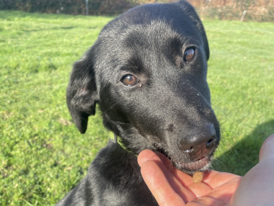
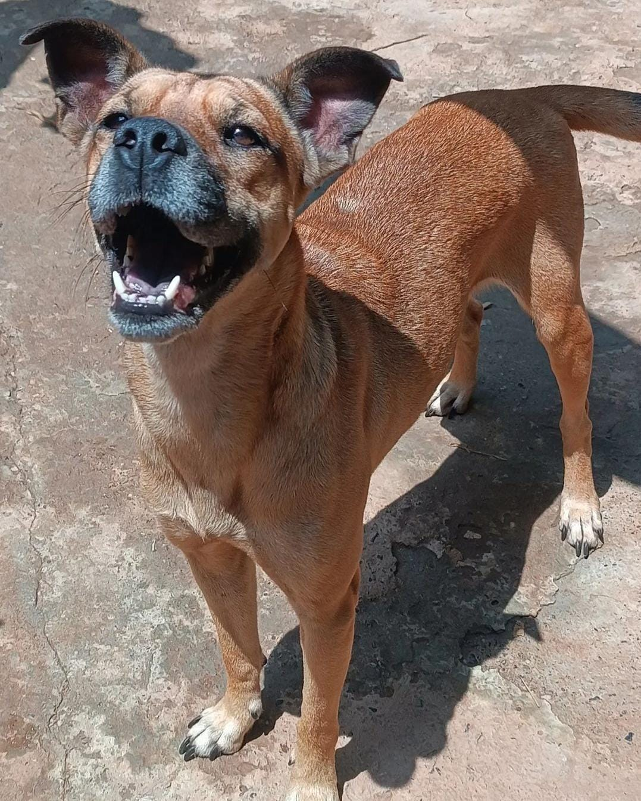

¡Adopta, un amigo te espera, cambia su vida y la tuya!
Para adoptar y ser la familia responsable de un peludo de Animal Shelter, debes visitar nuestro Centro de Adopciones, puedes darle un vistazo a nuestros peluditos disponibles en los álbumes más abajo.
.png)
1. Enamórate
Si te enamoras de un peludito, descarga y diligencia la Solicitud de Adopción, envíanosla a nuestro correo info@animalshelter.org
2. Proceso de Adopción
Realizaremos un estudio, entrevista y visita. Si se aprueba la solicitud, se coordinará la fecha para la entrega en la Fundación. Ese día deberás entregar un pequeño aporte de $50.000, que nos ayudará a cubrir los gastos de vacunas y esterilización.
Cuando lleves el peludito a casa, seguiremos en contacto contigo cada cierto tiempo, para saber que todo va bien con el nuevo integrante de la familia. 🐾
Perros de AnimalShelter para Adoptar y/o Apadrinar

Max
Edad: 2 años
Raza: Labrador

Luna
Edad: 1 año
Raza: Mestizo
Gatos de AnimalShelter para Adoptar y/o Apadrinar

Miau
Edad: 4 meses
Raza: Criollo
Pelusa
Edad: 3 meses
Raza: Criollo